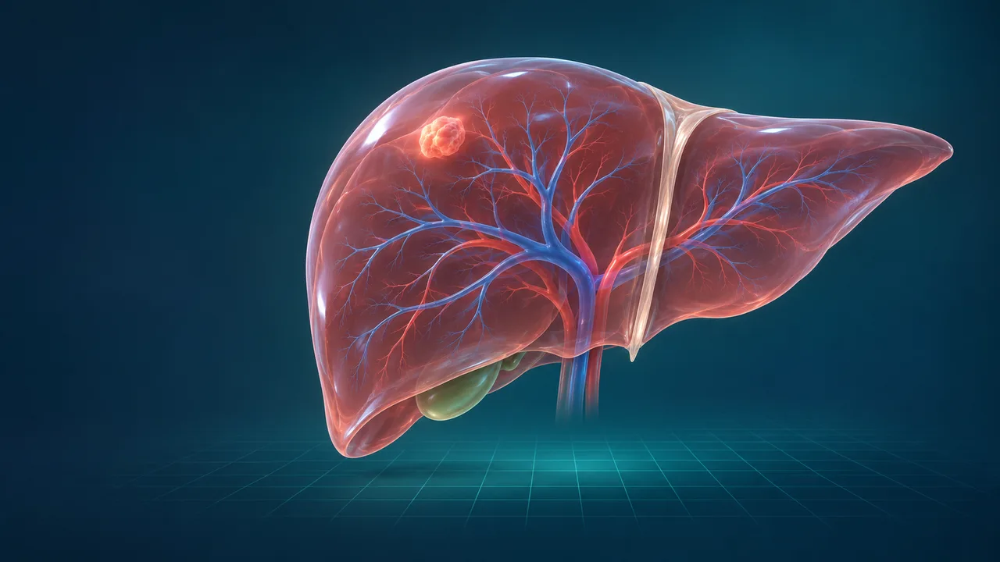
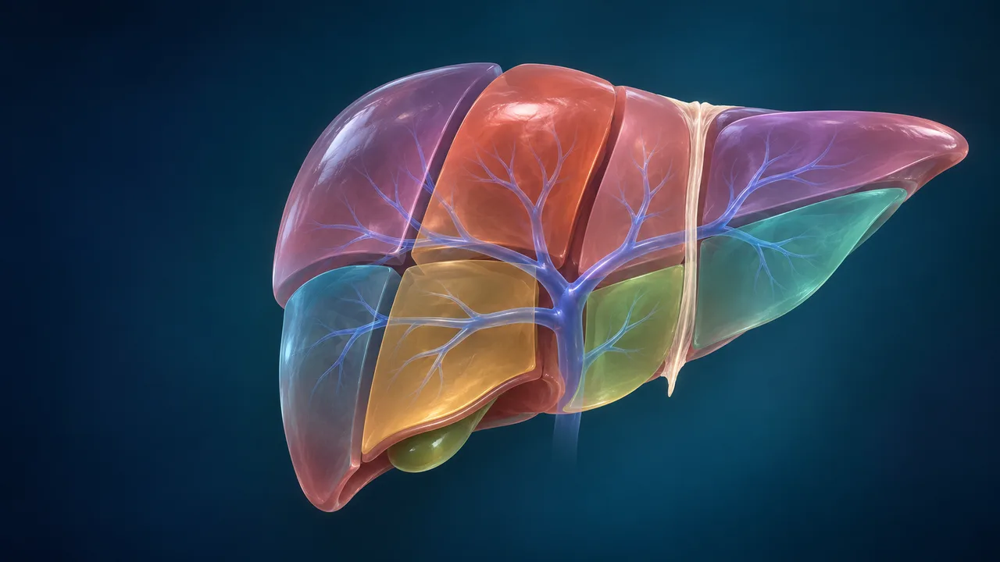
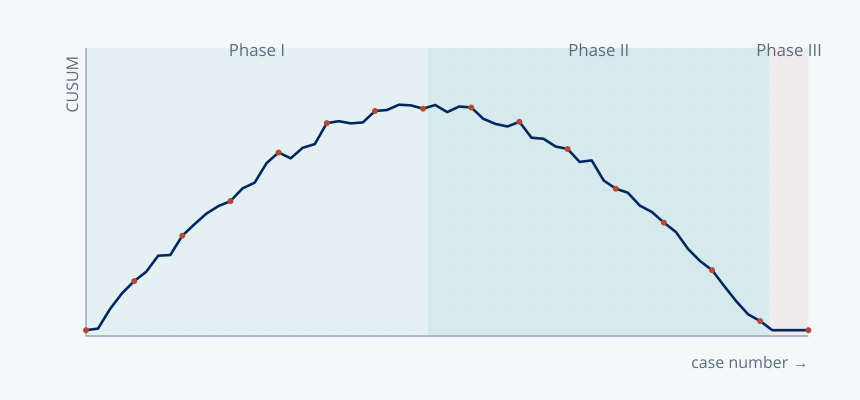
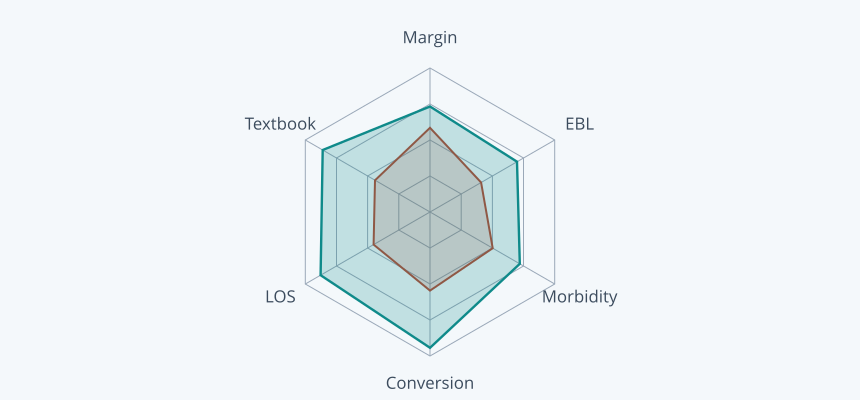

Facilities연구 인프라
Shared resources공동 연구 자원
AIMILS studies run in the operating rooms of the participating hospitals. Below are the shared tools and platforms that make multicenter precision hepatectomy research possible.AIMILS 연구는 참여 병원의 수술실에서 이루어집니다. 다기관 precision hepatectomy 연구를 가능하게 하는 공동 도구와 플랫폼을 소개합니다.
3D reconstruction & planning3D 재구성 · 수술 계획


Participating centers use 3D reconstruction of the liver, vessels and tumours to plan resection lines and estimate remnant volume before surgery.참여 기관은 간·혈관·종양의 3D 재구성으로 절제선을 계획하고 잔존 간 용적을 수술 전에 예측합니다.
ICG fluorescence imagingICG 형광영상


Near-infrared cameras on laparoscopic and robotic platforms visualise segmental boundaries and tumours in real time.복강경·로봇 플랫폼의 근적외선 카메라로 구역 경계와 종양을 실시간으로 확인합니다.
Robotic & laparoscopic platforms로봇 · 복강경 플랫폼


Consortium members operate multiport and single-port robotic systems alongside advanced laparoscopy.컨소시엄 멤버들은 다공·단일공 로봇 시스템과 고급 복강경 장비를 함께 운용합니다.
MIS training labMIS 훈련 실습실


Hands-on wet-lab sessions support the proctorship program and the MIS swine model curriculum.실습형 wet-lab 세션이 프록터십 프로그램과 MIS 돼지 모델 교육과정을 뒷받침합니다.
AI-MILS Registry data platformAI-MILS Registry 데이터 플랫폼


A shared case report form and de-identified data collection let every center contribute to the same analysis.공통 증례기록서와 비식별 자료 수집으로 모든 기관이 같은 분석에 기여합니다.